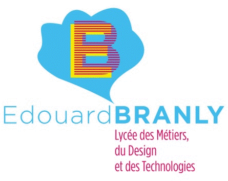

|  |
Acceuil
|
Presentation
|
Documentation
|
Fiche Technique
|
Téléchargement SADT | GEMMA | Conduite | Production TOR |
Fonctions
Nereidicc est un système pluritechnologique qui permet d’aborder simultanément les domaines du génie électrique
et du génie mécanique. La commande et le pilotage du système par API et la supervision par ordinateur y sont mis en œuvre.
Concept
Nereidicc est l’illustration d’un système où la force motrice d’un fluide est requise pour une opération
de matriçage de pièces. Ce principe est applicable à la distribution domestique d’eau, à l’irrigation, etc...
L’équipement fait appel à des composants de même nature que ceux des parties opératives et du contrôle
d’un dispositif réel de pompage, automatisé, régulé et supervisé.
Constitution
Nereidicc est avant tout une partie opérative comportant une bâche à eau servant de réservoir à deux électro-pompes.
Le fonctionnement est géré par une partie commande contenant principalement un API. L’eau pompée est acheminée dans une cuve
pour un retour ultérieur à la bâche. Une vanne manuelle à débit variable permet de simuler la demande utilisateur.